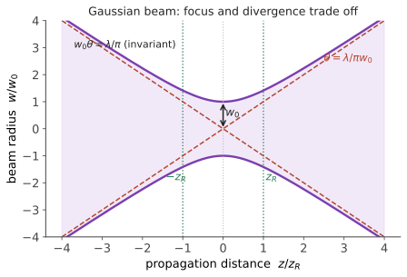

光源 II · 高斯光束与谐振腔
层次：本科核心 + 业界日常计算。 激光束既不是几何光线（它会衍射发散），也不是平面波（它有有限的横向尺寸）。高斯光束是介于两者之间的正确描述，也是所有激光系统设计的基本工具——聚焦、准直、耦合、腔设计全都要用它。
一、高斯光束的参数
基模（TEM₀₀）的强度分布是高斯的，沿传播方向的演化由几个量完全确定：
- \(w_0\)：束腰半径（最小处的 \(1/e^2\) 强度半径）；
- \(z_R\)：瑞利长度——光束半径增大到 \(\sqrt2 w_0\)（面积翻倍）的距离。它定义了"准直区"的长度；
- 远场发散半角：

二、最重要的一条：束腰与发散不可兼得
这个乘积称为光束参数积（BPP），对理想高斯束是 \(\lambda/\pi\)；实际光束为 \(M^2\lambda/\pi\)（第六页）。
关键工程结论：
- 想聚得更小 → 必然发散更快；
- 想传得更远（准直好）→ 束腰必须更大；
- 透镜可以改变 \(w_0\) 与 \(\theta\) 的分配，但不能改变它们的乘积。BPP 只能靠改善激光器本身（降低 \(M^2\)）来提高，任何无源光学系统都无法改善它。
这是一条守恒律，与 🔗 自动化站的水床效应、微电子站的 60 mV/dec 同属"告诉你什么做不到"的一类。它也是热力学第二定律在光学中的一个体现（辐射亮度守恒/étendue 守恒）。
三、聚焦：能聚多小
透镜聚焦一束半径为 \(w\) 的准直高斯光：
三条实用推论：
① 要聚得小，就要用短焦距、并把光束扩得足够大（充分填充透镜孔径）。这正是扩束器在激光加工与显微系统中必备的原因。
② 焦深（DOF）\(= 2z_R \propto w_0'^2/\lambda\) —— 聚焦越小，焦深越浅。 这个权衡贯穿多个领域：激光加工中焦深短意味着对工件高度极敏感；🔗 微电子站第十二页光刻的"分辨率与焦深不可兼得"（瑞利公式）是完全相同的物理。
③ 聚焦光斑不可能小于约 \(\lambda\) 量级——衍射极限（第四页）。
四、ABCD 定律：与几何光学的桥
高斯光束用复参数 \(q\) 描述：
实部给出波前曲率半径，虚部给出光束半径。
惊人的事实：\(q\) 通过光学系统的变换，用的是与几何光线完全相同的 ABCD 矩阵（第一页）：
这使得高斯光束的传播计算变得极其简便——只需把矩阵连乘，再代入这个分式变换。一套矩阵，同时服务几何光学与激光光学，是本课最优雅的工具复用。
五、谐振腔与模式
腔的自再现条件：光束往返一周后自身重现。用 ABCD 矩阵表述，可解出腔内的本征高斯模式——即腔决定了 \(w_0\) 的大小与位置。
稳定性条件（第六页）：\(0\le g_1g_2\le1\)。
几种常见腔型的权衡：
- 平凹腔：常用、易调；
- 共焦腔（\(L=R\)）：模体积适中、对失调不敏感，但简并度高（不同横模频率重合，模式选择差）；
- 半共焦、长曲率半径腔：模体积大 → 提取能量多，但对失调更敏感；
- 不稳定腔：用于高增益高功率系统，靠"漏出"取光，模体积大。
横模选择：在腔内加光阑，因为高阶模的横向尺寸大、损耗高 → 优先抑制高阶模，保留 TEM₀₀。这是获得好光束质量最直接的手段，代价是损失部分功率。
六、工程中的常用计算
高斯光束理论在实际中最常被用来做这几件事：
- 光纤耦合：把自由空间光束的 \(w_0\) 与光纤模场直径匹配。匹配不好，耦合效率急剧下降——这是光通信与光学系统装调的常见难点（第十二页）；
- 扩束与准直：用望远镜结构改变 \(w_0\) 与 \(z_R\)；
- 激光加工的焦点设计：权衡光斑尺寸与焦深；
- 腔设计与模匹配：把外部光束的 \(q\) 参数匹配到腔的本征模（否则会激发高阶模）；
- 功率密度估算：高斯束中心峰值强度 \(I_0 = 2P/(\pi w_0^2)\)。注意峰值是平均值的两倍——这在损伤阈值计算中至关重要，按平均功率算会严重低估损伤风险。
七、要点
- 高斯光束由 \(w_0\)（或 \(z_R\)）唯一确定；\(z_R\) 定义了准直区长度；
- \(w_0\theta=\lambda/\pi\) 是守恒量（BPP）——聚焦与准直不可兼得，无源光学无法改善光束质量；
- 聚焦光斑 \(\propto \lambda/\mathrm{NA}\)，焦深 \(\propto w_0'^2/\lambda\)——与光刻的分辨率-焦深权衡同源；
- ABCD 矩阵同时适用于光线与高斯光束（通过复参数 \(q\)）；
- 腔内加光阑抑制高阶模是改善光束质量的直接手段；
- 高斯束峰值强度是平均的两倍——损伤阈值计算必须用峰值。
下一页：数量上最重要的光源——半导体发光器件。LED 与激光二极管的原理、效率极限，以及它们与微电子站的直接接续。